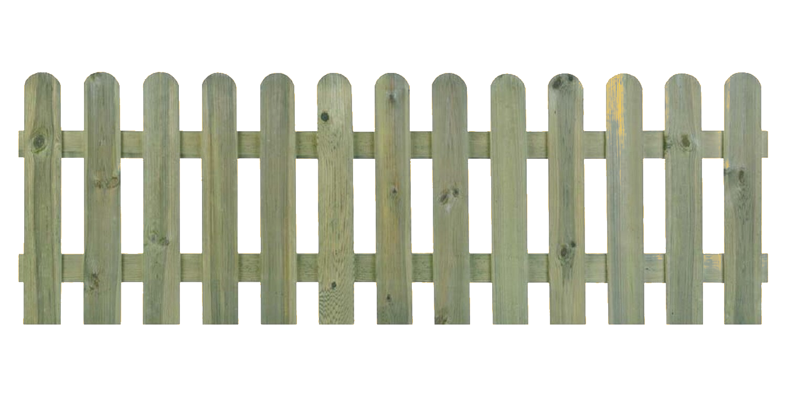

KOSTKA BRUKOWA

Kostka brukowa szara ma charakterystyczne, zaokrąglone krawędzie i naroża, wąskie zamknięcie spoin oraz gładką powierzchnię licową. Pozwala to na układanie z niej różnego rodzaju wzorów, jak rozety, pierścienie, łuki itp. Jest wykonana z wysokiej jakości betonu, cechującego się dużą odpornością na niskie temperatury oraz ścieranie. Dzięki połączeniu jej z kostkami w innych kolorach, jak np. kostka brukowa czerwona czy kostka brukowa czarna, można tworzyć estetyczne aranżacje.
CEMENT

Nasz cement jest idealny do wszystkich prac budowlanych. Można z niego wykonywać beton przeznaczony na ławy fundamentowe. Idealnie nadaje się także do produkcji zapraw, podsypek pod nawierzchnie z kostki brukowej, a także stabilizacji gruntów i produkcji tzw. "chudych betonów". To nieodzowne spoiwo do drobnych prac remontowych i naprawczych w Państwa domach. Wykonane z naszego cementu betony i zaprawy charakteryzują się podwyższoną odpornością na działanie środowisk agresywnych chemicznie.
PŁYTKI

Płytka klinkierowa przeznaczona do wewnątrz i na zewnątrz pomieszczeń do położenia na podłogach lub schodach. Posiada właściwości mrozoodporne. Ze względu na wysoką klasę ścieralności idealnie nadaje się do wszystkich pomieszczeń mieszkalnych oraz użyteczności publicznej (z wyłączeniem miejsc o szczególnym natężeniu ruchu). Współczynnik antypoślizgowości R9.
PANELE PODŁOGOWE
Jest to wysokiej jakości panel podłogowy o klasie ścieralności AC 3 oznaczającą dobrą odporność na ścieranie czy uderzenia. Przeznaczony jest do pomieszczeń mieszkalnych oraz do pomieszczeń użyteczności publicznej o niskim natężeniu ruchu, np. małe biuro, butik. Struktura drewna sprawia, że ułożona podłoga odzwierciedla wygląd desek parkietowych. Dzięki bezklejowemu systemowi łączenia, montaż przebiega szybko i bezproblemowo.
KLEJ

Klej błyskawiczny jest wykonany z kauczuku i dodatkowo wzmocniony włóknami syntetycznymi, co daje mu wysoką siłę spojenia. Zapewnia trwałe i wodoodporne łączenie. Trzyma już po 1 sekundzie od dociśnięcia, natomiast pełne utwardzenie kleju następuje po 24 godzinach. Może być stosowany do uzupełniania ubytków w podłożu. Przeznaczony do użytku zarówno w pomieszczeniach, jak i na zewnątrz.
SZTACHETY
Nasz płot sztachetowy, staranne wykończenie oraz estetyczny wygląd czynią go niezastąpionym dla typowych zastosowań podczas tworzenia aranżacji na działce lub ogrodzie. Wykonany z drewna sosnowego poddanego procesowi impregnacji ciśnieniowej, która zabezpiecza go przed szkodliwym działaniem czynników atmosferycznych.